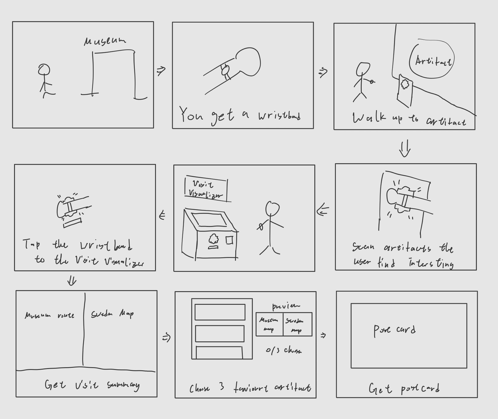
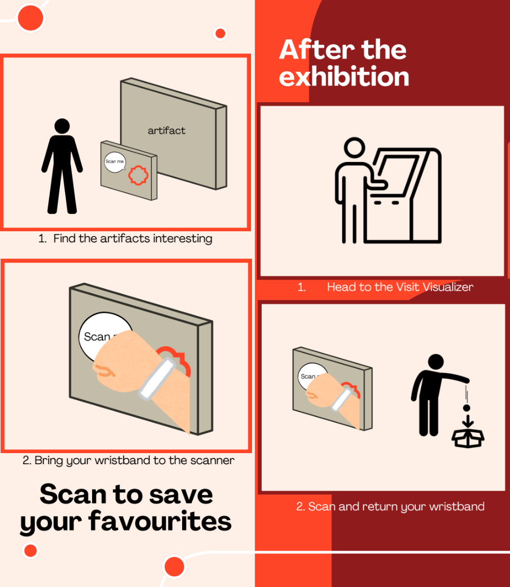
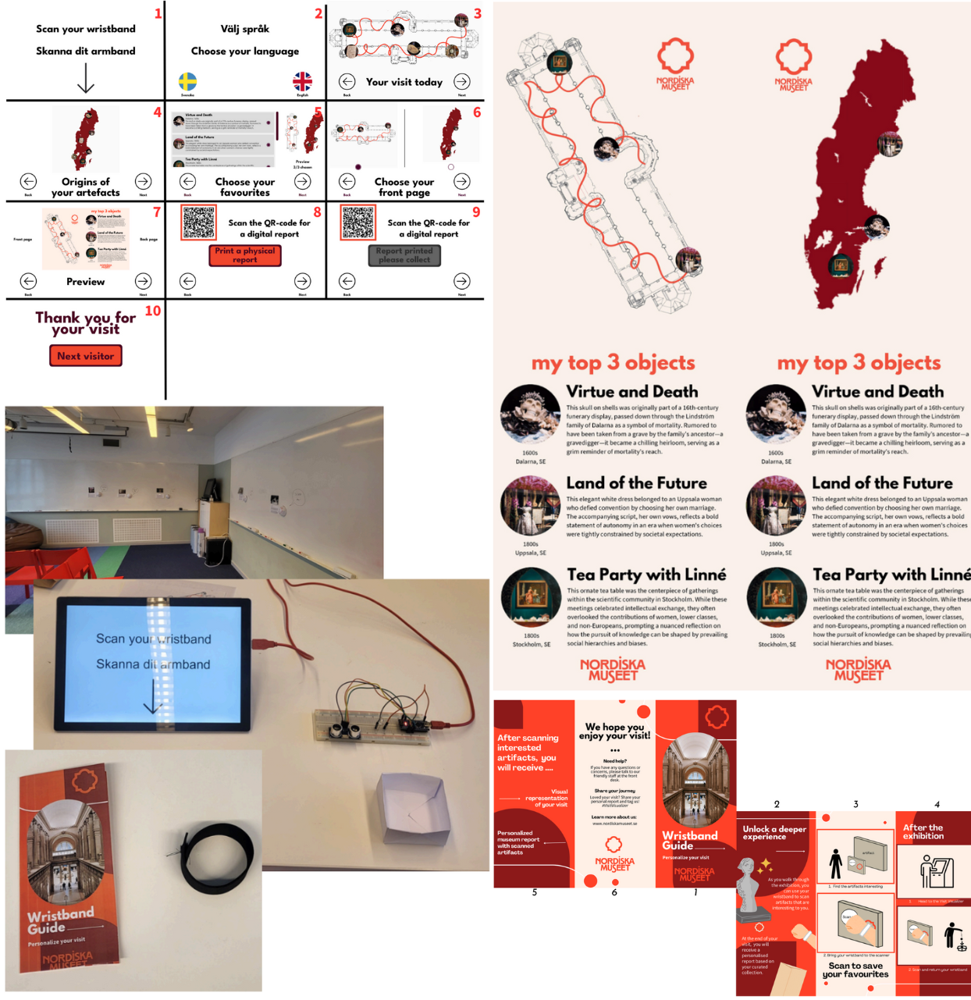

Designing for care and connection between visitors and cultural artifacts
Colaborated with Kristin Eriksson, Louisa Helen Hirvonen, Amina-Kamra MaglićWorkbook | Video Prototype
Traditional museum experiences often position visitors as observers and artifacts as objects inside the glass walls.
However, visitors and artifacts mutually shape each other through encounterment and attention creating to interdependence relationship that creates a mutual care.
Therefore, how can we design museum experiences that foster emotional and ethical connections between visitors and artifacts, rather than just as passive observer?
Design Concept
Therefore, how can we design museum experiences that foster emotional and ethical connections between visitors and artifacts, rather than just as passive observer?
Based on our discoveries from interviews and museum diaries (an adaptation of diary study to record museum experiences), We designed a system that is aimed to be least obtrusive for visiting experience while allowing visitors to directly interact with the artifacts and create meaningful takeaways and reflection beyond the museum space. It also caters to different exploration styles (e.g. linear and non-linear, solo and multi-user) to preserve agency and social interaction visitors value. where visitors could
The system requires visitors wear a wristband that allow them to interact with artifacts they find interesting through scanning a sensor next to it. At the end of the visit, there will be the Visit Visualizaer machine, where
- Visitors return the wristband
- Visualization of the visit path and the origin of the interacted artifacts
- Select 3 of the interacted artifacts
- Generate a post-card with the selected artifacts' ethical/cultural implications


Prototypeing
We made a Wizard of Oz prototype of the touchscreen interface of the Visit Visualizer machine, wristband, and artifact scanner for a mock up museum. The artifact scanner light lit up when the wristband is scanned, the Visit Visualizer start screen comes up when the wristband is placed in the return box, and a pre-set post-card will be "printed". We also created a video prototype personalized report and instruction pamphlet. Additional to the mockup prototype, we also created a video prototype to illustrate the user experience of the system in a museum context.

We conducted user testing and the results shows that having a tangible report created a bridge between the museum experience and visitors' ongoing thinking and make the connections and questions they had formed about ethical care toward the artifacts and their visible.